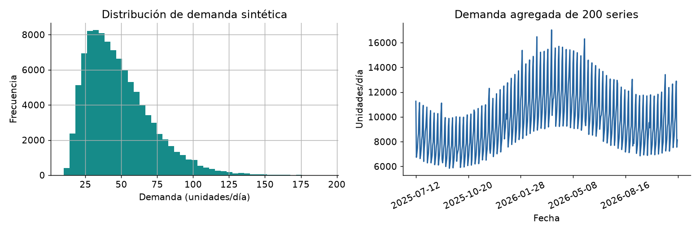
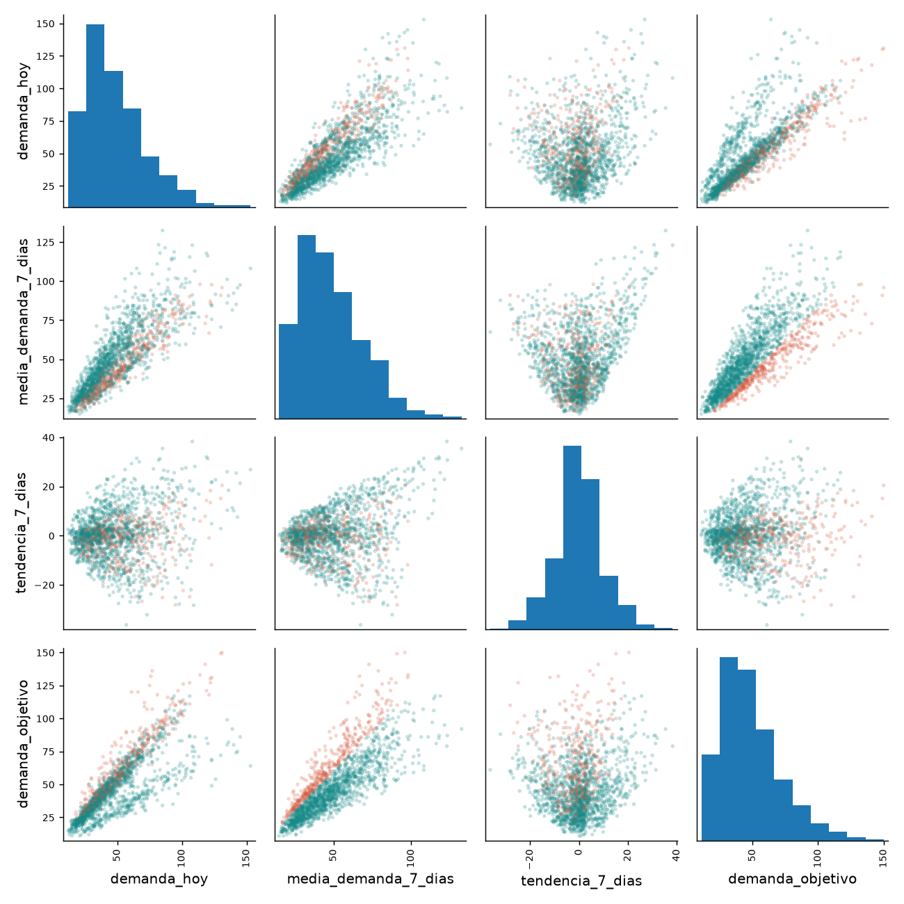
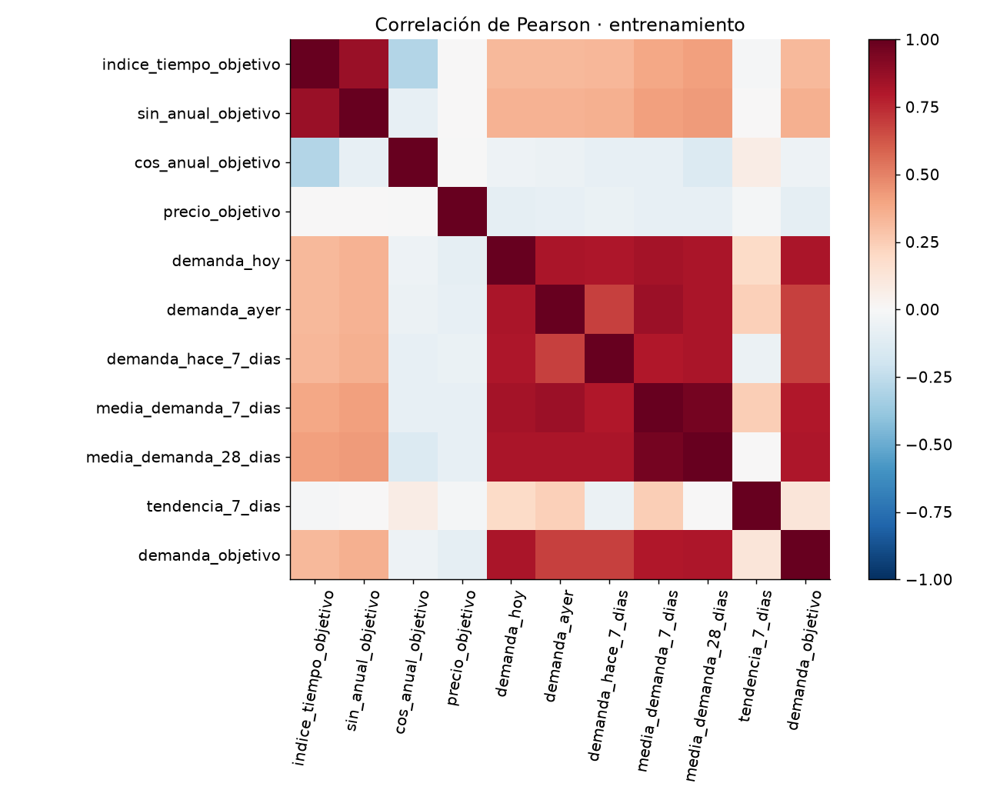
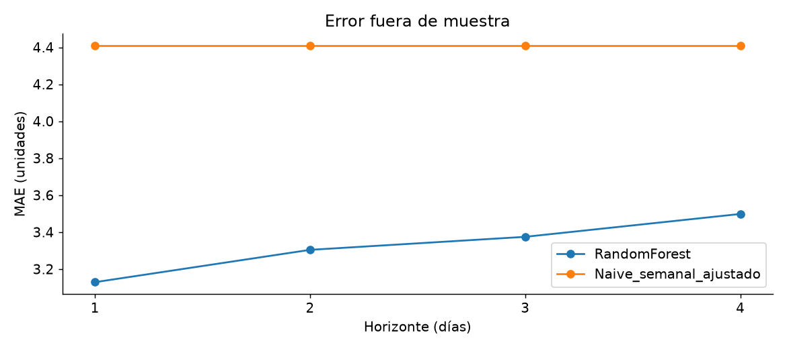
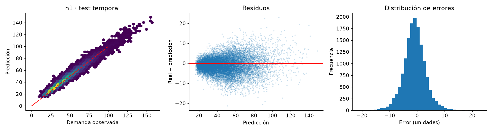
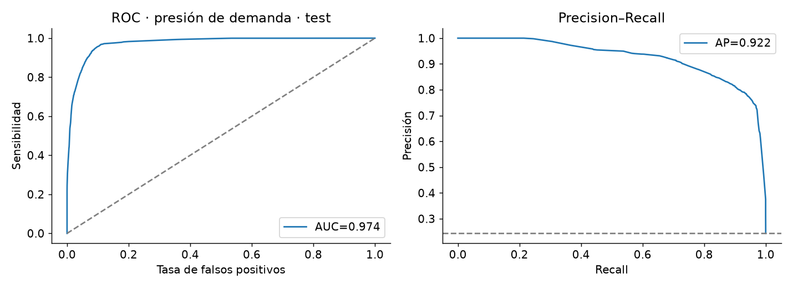
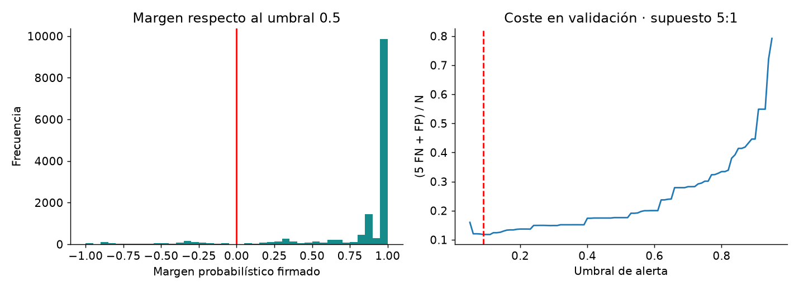
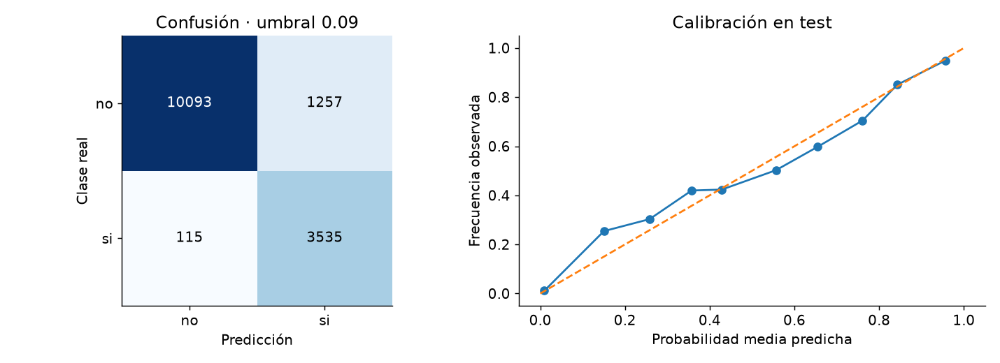
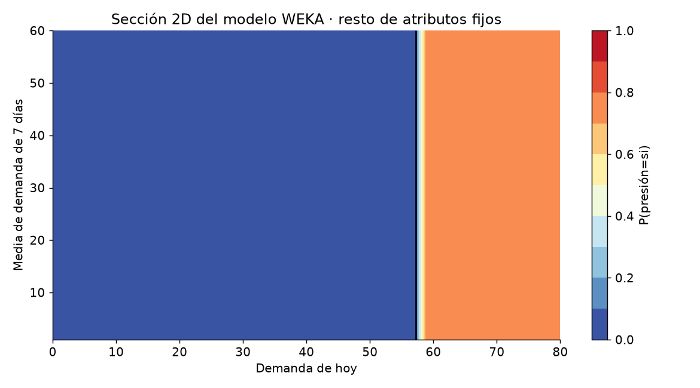

Stock-Quest
Minería de datos para anticipar demanda
CRISP-DM · WEKA 3.8.6 · 25 de noviembre de 2026
Datos sintéticos; evaluación temporal y prototipo offline.
29,03% menos MAE a un día frente al baseline semanal
RandomForest ganó en validación para h1–h4. El conjunto de prueba abarca 10/09–23/11/2026. Se conserva separado del ajuste. J48 fue elegido para la clase auxiliar por una diferencia pequeña de AUC en validación, sin prueba de superioridad estadística.
Demanda y variación temporal
100.000 registros sintéticos. Media 48,59; desviación 22,77; rango 10–192 unidades. Las fluctuaciones agregadas y promociones desaconsejan borrar valores extremos por rutina.

Dispersión y distribución de las clases
Muestra reproducible de 1.800 filas de entrenamiento. Verde: sin presión; naranja: presión. La demanda objetivo solo aparece como exploración. Las medias históricas tienen asociación con demanda futura; la separación no demuestra causalidad.

Matriz de correlación
Pearson sobre entrenamiento. Redundancia entre medias y lags puede volver inestables los coeficientes de una regresión lineal. Los árboles no requieren normalización para comparar umbrales.

Error por horizonte
MAE de prueba: 3,13 / 3,30 / 3,37 / 3,50 unidades. El baseline semanal alcanza 4,41. La degradación con el horizonte expresa mayor incertidumbre. Modelos elegidos por validación, no por prueba.

Predicciones y residuos
La diagonal es acierto perfecto. El error real−predicción presenta sesgo −0,96: sobreestimación media. La dispersión aumenta con el nivel de demanda. IC95% aproximado del MAE h1: 3,00–3,28; bootstrap de bloques de siete fechas.

ROC y Precision–Recall
J48: AUC 0,974; AP 0,922. La referencia PR es la prevalencia 24,33%. Estas curvas corresponden a presión de demanda, definida como demanda de mañana > 1,2 × media semanal conocida hoy; no a agotamiento físico.

Margen probabilístico y coste
Margen=(2y−1)(2p−1). Negativo implica error al umbral 0,5. Para operación se eligió 0,09 en validación minimizando (5FN+FP)/N. Esa relación de costes es un supuesto revisable del laboratorio; no se recalibró con prueba.

Errores y calibración
En 15.000 casos: TN=10.093; FP=1.257; FN=115; TP=3.535. Recall 96,85% y precisión 73,77%. Brier 0,0523. Una curva ROC alta no implica probabilidades perfectamente calibradas.

Frontera del clasificador WEKA
Sección bidimensional del J48 completo: variar demanda de hoy y media semanal, fijando el resto de atributos. El escalón es consistente con una regla del árbol. No representa todos los contextos y puede incluir combinaciones fuera del soporte de los datos.

De pronóstico a recomendación
Pedido = ceil(max(0, suma de h1–h4 + stock de seguridad − stock final − pedidos pendientes)). La seguridad usa el percentil 95 del máximo error acumulado positivo en 72 orígenes de validación por serie. El archivo contiene 200 decisiones hipotéticas desde el estado baseline del 23/11/2026; no se ejecutaron pedidos ni un replay completo de política.
Integración propuesta
La capacidad de decisiones de simulación conserva la propiedad del inventario. Application define un puerto de pronóstico; Infrastructure implementa WEKA. El gateway compone HTTP sin acceso SQL. Versionar modelo, esquema, corte de datos y fallback al naive. Antes de automatizar, medir stock medio, demanda perdida, fill rate y servicio por ciclo bajo una política simulada completa.
Límites de la evidencia
Solo hay ocho agotamientos en el historial. La clase de presión de demanda es un indicador didáctico distinto. El 95% de servicio es un objetivo, no un resultado certificado. No se midieron ahorros monetarios ni generalización a datos reales. No se ejecutó la GUI de WEKA; los modelos se entrenaron con su API Java.